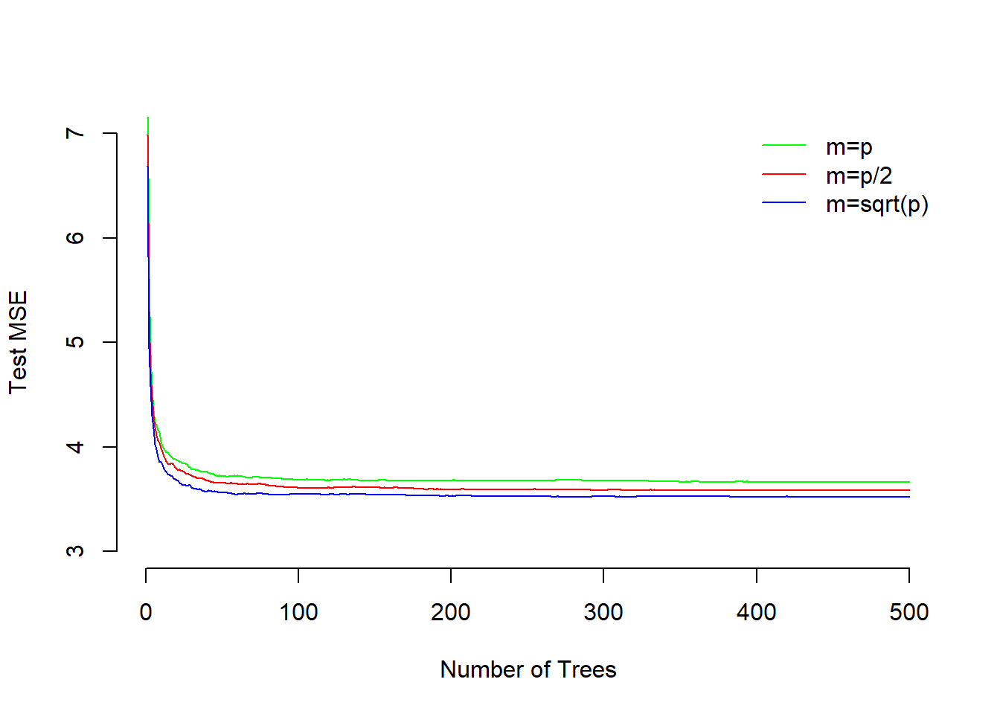
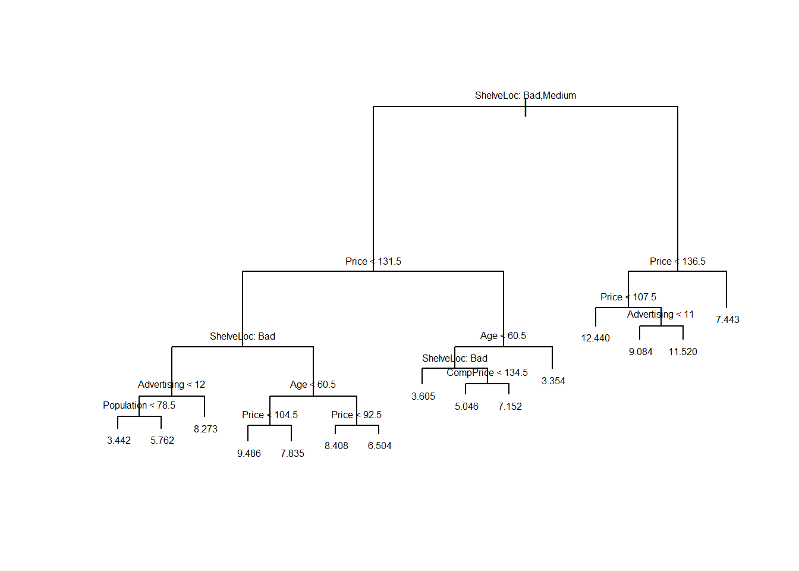
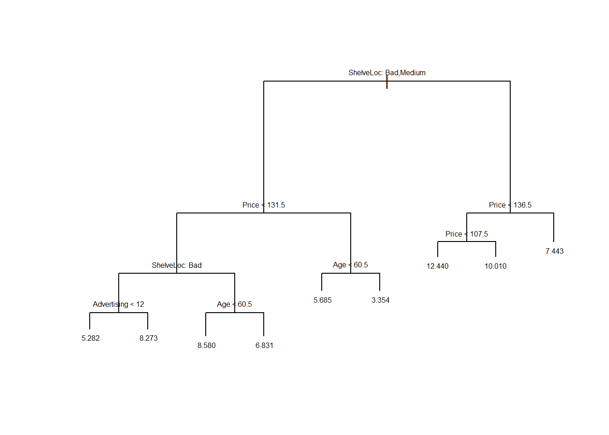
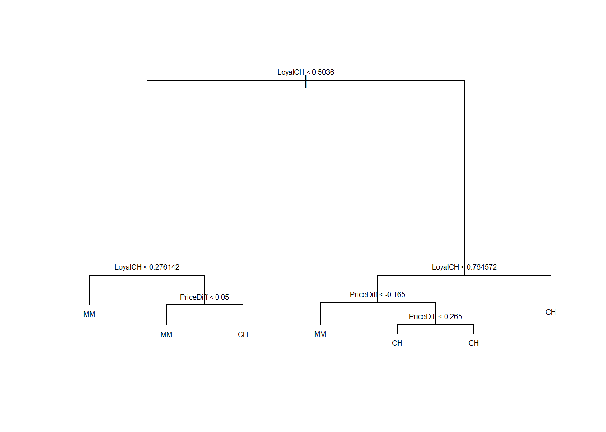
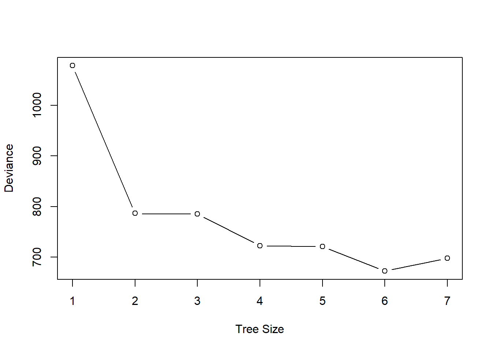
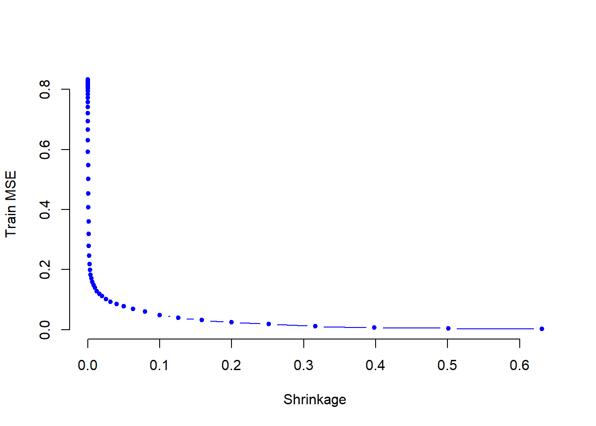
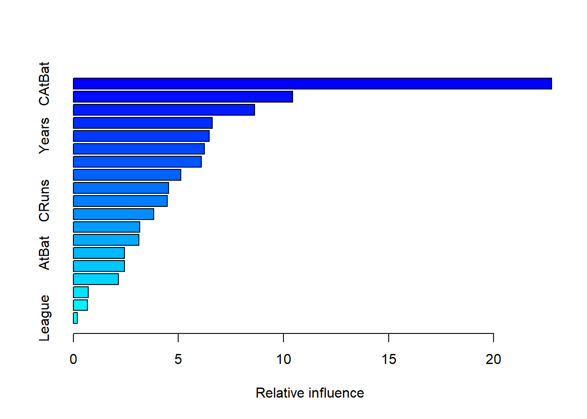
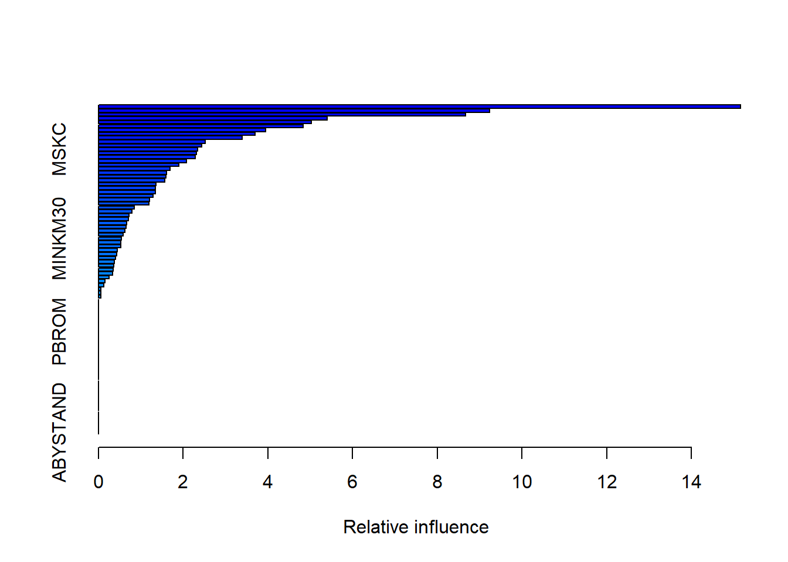

Solution Day 8 – Tree based Methods
Philipp Broniecki and Lucas Leemann – Machine Learning 1K
Q1
We applied random forests for varying mtry. In addition vary the number of trees and create a plot that displays both test error and OOB error.
First, we reload the dataset and do some pre-processing.
# clear workspace
rm(list=ls())
library(foreign)
bes <- read.dta("http://philippbroniecki.github.io/ML2017.io/data/bes.dta")
bes <- na.omit(bes)
# clean in_school
table(bes$in_school)##
## -0.405100243979883 -0.286622836951644 -0.0932005119161492
## 1 1 1
## -0.08278915151733 0 0.0403350016659423
## 1 4120 1
## 0.123419680101826 0.247478125358543 1
## 1 1 34bes$in_school <- ifelse (bes$in_school != 1, 0, bes$in_school)
table(bes$in_school)##
## 0 1
## 4127 34# data manipulation
categcorical <- c("Turnout", "Vote2001", "Gender", "PartyID", "Telephone", "edu15",
"edu16", "edu17", "edu18", "edu19plus", "in_school", "in_uni")
# declare factor variables
bes[, categcorical] <- lapply(bes[, categcorical], factor)We tried 10 different values of mtry. We will try three different values, \(p\), \(p/2\), \(\sqrt{p}\), of mtry to speed up the process and vary the number of trees from 1 to 500. We will pass training and test data sets to randomForest() which will then estimate test error on the fly on the test data we specified, so only the training bit will be used for bootstrapping the samles.
library(randomForest)
set.seed(123)
# training/test split
train <- sample(nrow(bes), nrow(bes) / 2) # row index numbers
X.train <- bes[train, -which(names(bes)=="Income")]
X.test <- bes[-train, -which(names(bes)=="Income")]
Y.train <- bes[train, "Income"]
Y.test <- bes[-train, "Income"]
# variables to try per split
mtry1 <- ncol(bes) -1
mtry2 <- round(ncol(bes) /2, digits = 0)
mtry3 <- round( sqrt(ncol(bes)), digits = 0)
# random forest models
m1 <- randomForest(X.train, Y.train, xtest=X.test, ytest=Y.test, mtry=mtry1, ntree=500)
m2 <- randomForest(X.train, Y.train, xtest=X.test, ytest=Y.test, mtry=mtry2, ntree=500)
m3 <- randomForest(X.train, Y.train, xtest=X.test, ytest=Y.test, mtry=mtry3, ntree=500)
plot(1:500, m1$test$mse, col="green", type="l",
xlab="Number of Trees", ylab="Test MSE", ylim=c(3, 7), bty = "n")
lines(1:500, m2$test$mse, col="red", type="l")
lines(1:500, m3$test$mse, col="blue", type="l")
legend("topright", c("m=p", "m=p/2", "m=sqrt(p)"),
col=c("green", "red", "blue"), cex=1, lty=1, bty = "n")
The plot shows that test MSE for single tree is quite high. It is reduced by adding more trees to the model and stabilizes around 50 trees. Test MSE for including all variables at split is slightly higher as compared to both using half or square-root number of variables. The smallest test error results from using the \(\sqrt{p}\).
Q2
Looking at the Carseats data from the ISLR package we will seek to predict Sales using regression trees and related approaches, treating the response as a quantitative variable.
- Split the data set into a training set and a test set.
library(ISLR)
attach(Carseats)## The following objects are masked from Carseats (pos = 22):
##
## Advertising, Age, CompPrice, Education, Income, Population,
## Price, Sales, ShelveLoc, Urban, US## The following objects are masked from Carseats (pos = 24):
##
## Advertising, Age, CompPrice, Education, Income, Population,
## Price, Sales, ShelveLoc, Urban, USset.seed(123)
train <- sample(nrow(Carseats), nrow(Carseats) / 2)
Carseats.train <- Carseats[train, ]
Carseats.test <- Carseats[-train, ]- Fit a regression tree to the training set. Plot the tree, and interpret the results. What test error rate do you obtain?
library(tree)
tree.carseats <- tree(Sales~ . , data=Carseats.train)
summary(tree.carseats)##
## Regression tree:
## tree(formula = Sales ~ ., data = Carseats.train)
## Variables actually used in tree construction:
## [1] "ShelveLoc" "Price" "Advertising" "Population" "Age"
## [6] "CompPrice"
## Number of terminal nodes: 15
## Residual mean deviance: 2.624 = 485.4 / 185
## Distribution of residuals:
## Min. 1st Qu. Median Mean 3rd Qu. Max.
## -3.863000 -1.166000 0.000105 0.000000 1.070000 4.177000plot(tree.carseats)
text(tree.carseats, pretty=0, cex=0.5)
pred.carseats <- predict(tree.carseats, Carseats.test)
mean((Carseats.test$Sales - pred.carseats)^2)## [1] 4.427724The test MSE is about \(4.43\).
- Use cross-validation in order to determine the optimal level of tree complexity. Does pruning the tree improve the test error rate?
cv.carseats <- cv.tree(tree.carseats, FUN=prune.tree)
par(mfrow=c(1, 2))
plot(cv.carseats$size, cv.carseats$dev, type="b")
plot(cv.carseats$k, cv.carseats$dev, type="b")
# Best size = 9
pruned.carseats <- prune.tree(tree.carseats, best=9)
par(mfrow=c(1, 1))
plot(pruned.carseats)
text(pruned.carseats, pretty=0, cex=0.5)
pred.pruned <- predict(pruned.carseats, Carseats.test)
mean((Carseats.test$Sales - pred.pruned)^2)## [1] 5.071392Pruning the tree in this case increases the test MSE to \(5.07\).
- Use the bagging approach in order to analyze this data. What test error rate do you obtain? Use the
importance()function to determine which variables are most important.
library(randomForest)
bag.carseats <- randomForest(Sales~ . , data=Carseats.train,
mtry=10, ntree=500, importance=TRUE)
bag.pred <- predict(bag.carseats, Carseats.test)
mean((Carseats.test$Sales - bag.pred)^2)## [1] 2.500485importance(bag.carseats)## %IncMSE IncNodePurity
## CompPrice 19.2587409 140.828633
## Income 4.3882311 66.344000
## Advertising 16.6768251 117.794498
## Population 0.5382655 75.312674
## Price 49.6911455 431.909900
## ShelveLoc 54.6710024 453.406139
## Age 21.7562791 174.660554
## Education 3.9003432 43.417283
## Urban -0.6565416 9.584521
## US 1.7945852 7.451886Bagging improves the test MSE to \(2.50\). We also see that Price, ShelveLoc and Age are the three most important predictors of Sale.
- Use random forests to analyze this data. What test error rate do you obtain? Use the
importance()function to determine which variables are most important. Describe the effect of mm, the number of variables considered at each split, on the error rate obtained.
mse.vec <- NA
for (a in 1:10){
rf.carseats <- randomForest(Sales ~ . , data=Carseats.train,
mtry=a, ntree=500, importance=TRUE)
rf.pred <- predict(rf.carseats, Carseats.test)
mse.vec[a] <- mean((Carseats.test$Sales - rf.pred)^2)
}
# best model
which.min(mse.vec)## [1] 9# test error
mse.vec[which.min(mse.vec)]## [1] 2.523449We see that the best model uses 9 variables at each split. That model decreases test error compared to bagging.
rf.carseats <- randomForest(Sales ~ . , data = Carseats,
mtry=9, ntree=500, importance=TRUE)
importance(rf.carseats)## %IncMSE IncNodePurity
## CompPrice 39.4574984 332.47654
## Income 14.6584232 167.31263
## Advertising 27.6128855 235.10663
## Population 0.4294254 102.12359
## Price 79.5892610 899.10084
## ShelveLoc 87.8384742 976.91826
## Age 26.2332341 288.73033
## Education 1.5410093 82.15934
## Urban -1.5312926 13.32068
## US 1.9808418 17.80844ShelveLoc is the most important variable. Price, CompPrice, Advertising, and Age are also important predictors of Sale.
Q3
This problem involves the OJ dataset which is part of the ISLR package.
- Create a training set containing a random sample of 800 observations, and a test set containing the remaining observations.
library(ISLR)
attach(OJ)## The following objects are masked from OJ (pos = 22):
##
## DiscCH, DiscMM, ListPriceDiff, LoyalCH, PctDiscCH, PctDiscMM,
## PriceCH, PriceDiff, PriceMM, Purchase, SalePriceCH,
## SalePriceMM, SpecialCH, SpecialMM, STORE, Store7, StoreID,
## WeekofPurchaseset.seed(1013)
train <- sample(dim(OJ)[1], 800)
OJ.train <- OJ[train, ]
OJ.test <- OJ[-train, ]- Fit a tree to the training data, with
Purchaseas the response and the other variables except forBuyas predictors. Use thesummary()function to produce summary statistics about the tree, and describe the results obtained. What is the training error rate? How many terminal nodes does the tree have?
library(tree)
oj.tree <- tree(Purchase ~ . , data=OJ.train)
summary(oj.tree)##
## Classification tree:
## tree(formula = Purchase ~ ., data = OJ.train)
## Variables actually used in tree construction:
## [1] "LoyalCH" "PriceDiff"
## Number of terminal nodes: 7
## Residual mean deviance: 0.7517 = 596.1 / 793
## Misclassification error rate: 0.155 = 124 / 800The tree only uses two variables: LoyalCH and PriceDiff. It has \(7\) terminal nodes. Training error rate (misclassification error) for the tree is \(0.155\)
- Type in the name of the tree object in order to get a detailed text output. Pick one of the terminal nodes, and interpret the information displayed.
oj.tree## node), split, n, deviance, yval, (yprob)
## * denotes terminal node
##
## 1) root 800 1075.00 CH ( 0.60250 0.39750 )
## 2) LoyalCH < 0.5036 359 422.80 MM ( 0.27577 0.72423 )
## 4) LoyalCH < 0.276142 170 119.10 MM ( 0.11176 0.88824 ) *
## 5) LoyalCH > 0.276142 189 257.50 MM ( 0.42328 0.57672 )
## 10) PriceDiff < 0.05 79 76.79 MM ( 0.18987 0.81013 ) *
## 11) PriceDiff > 0.05 110 148.80 CH ( 0.59091 0.40909 ) *
## 3) LoyalCH > 0.5036 441 343.30 CH ( 0.86848 0.13152 )
## 6) LoyalCH < 0.764572 186 210.30 CH ( 0.74731 0.25269 )
## 12) PriceDiff < -0.165 29 34.16 MM ( 0.27586 0.72414 ) *
## 13) PriceDiff > -0.165 157 140.90 CH ( 0.83439 0.16561 )
## 26) PriceDiff < 0.265 82 95.37 CH ( 0.73171 0.26829 ) *
## 27) PriceDiff > 0.265 75 31.23 CH ( 0.94667 0.05333 ) *
## 7) LoyalCH > 0.764572 255 90.67 CH ( 0.95686 0.04314 ) *Let’s pick terminal node labeled “10)”. The splitting variable at this node is PriceDiff. The splitting value of this node is \(0.05\). There are \(79\) observations in the subtree below this node. The deviance for all points contained in the region below this node is \(76.79\). A star in the line denotes that this is a terminal node. The prediction at this node is Sales = MM. About \(19\%\) of the observations in this node have CH as value of Sales. The remaining \(81\%\) points have MM as value of Sales.
- Create a plot of the tree, and interpret the results.
plot(oj.tree)
text(oj.tree, pretty=0, cex = 0.5)
LoyalCH is the most important variable of the tree, the top 3 nodes contain LoyalCH. If LoyalCH \(<0.27\), the tree predicts MM. If LoyalCH \(>0.76\), the tree predicts CH. For intermediate values of LoyalCH, the decision also depends on the value of PriceDiff.
- Predict the response on the test data, and produce a confusion matrix comparing the test labels to the predicted test labels. What is the test error rate?
oj.pred <- predict(oj.tree, OJ.test, type="class")
table(OJ.test$Purchase, oj.pred)## oj.pred
## CH MM
## CH 152 19
## MM 32 67mean( OJ.test$Purchase == oj.pred)## [1] 0.8111111We correctly classify \(81\%\) of the observations.
- Produce a plot with tree size on the \(x\)-axis and cross-validated classification error rate on the \(y\)-axis.
cv.oj <- cv.tree(oj.tree, FUN=prune.tree)
plot(cv.oj$size, cv.oj$dev,
type="b", xlab="Tree Size", ylab="Deviance")
- Which tree size corresponds to the lowest cross-validated classification error rate?
A tree size of 6 gives the lowest cross-validation error.
- Produce a pruned tree corresponding to the optimal tree size obtained using cross-validation. If cross-validation does not lead to selection of a pruned tree, then create a pruned tree with five terminal nodes.
oj.pruned <- prune.tree(oj.tree, best=6)- Compare the training error rates between the pruned and unpruned trees. Which is higher?
summary(oj.tree) ##
## Classification tree:
## tree(formula = Purchase ~ ., data = OJ.train)
## Variables actually used in tree construction:
## [1] "LoyalCH" "PriceDiff"
## Number of terminal nodes: 7
## Residual mean deviance: 0.7517 = 596.1 / 793
## Misclassification error rate: 0.155 = 124 / 800summary(oj.pruned)##
## Classification tree:
## snip.tree(tree = oj.tree, nodes = 13L)
## Variables actually used in tree construction:
## [1] "LoyalCH" "PriceDiff"
## Number of terminal nodes: 6
## Residual mean deviance: 0.7689 = 610.5 / 794
## Misclassification error rate: 0.155 = 124 / 800The training misclassification rate is the same in both trees: \(15.5\%\)
- Compare the test error rates between the pruned and unpruned trees. Which is higher?
pred.unpruned <- predict(oj.tree, OJ.test, type="class")
misclass.unpruned <- sum(OJ.test$Purchase != pred.unpruned)
misclass.unpruned / length(pred.unpruned)## [1] 0.1888889pred.pruned <- predict(oj.pruned, OJ.test, type="class")
misclass.pruned <- sum(OJ.test$Purchase != pred.pruned)
misclass.pruned / length(pred.pruned)## [1] 0.1888889Pruned and unpruned trees have same test error rate of \(0.189\).
Q4
We now use boosting to predict Salary in the Hitters dataset, which is part of the ISLR package.
- Remove the observations for whom the salary information is unknown, and then log-transform the salaries.
library(ISLR)
sum(is.na(Hitters$Salary))## [1] 59Hitters <- Hitters[-which(is.na(Hitters$Salary)), ]
sum(is.na(Hitters$Salary))## [1] 0Hitters$Salary <- log(Hitters$Salary)- Create a training set consisting of the first 200 observations, and a test set consisting of the remaining observations.
train <- 1:200
Hitters.train <- Hitters[train, ]
Hitters.test <- Hitters[-train, ]- Perform boosting on the training set with \(1,000\) trees for a range of values of the shrinkage parameter \(\lambda\). Produce a plot with different shrinkage values on the \(x\)-axis and the corresponding training set MSE on the \(y\)-axis.
library(gbm)
set.seed(103)
pows <- seq(-10, -0.2, by=0.1)
lambdas <- 10 ^ pows
length.lambdas <- length(lambdas)
train.errors <- rep(NA, length.lambdas)
test.errors <- rep(NA, length.lambdas)
for (i in 1:length.lambdas) {
boost.hitters <- gbm(Salary ~ . , data=Hitters.train,
distribution="gaussian",
n.trees=1000,
shrinkage=lambdas[i])
train.pred <- predict(boost.hitters, Hitters.train, n.trees=1000)
test.pred <- predict(boost.hitters, Hitters.test, n.trees=1000)
train.errors[i] <- mean((Hitters.train$Salary - train.pred)^2)
test.errors[i] <- mean((Hitters.test$Salary - test.pred)^2)
}
plot(lambdas, train.errors, type="b",
xlab="Shrinkage", ylab="Train MSE",
col="blue", pch=20, bty = "n")
- Produce a plot with different shrinkage values on the \(x\)-axis and the corresponding test set MSE on the \(y\)-axis.
plot(lambdas, test.errors, type="b",
xlab="Shrinkage", ylab="Test MSE",
col="red", pch=20)
min(test.errors)## [1] 0.2560507lambdas[which.min(test.errors)]## [1] 0.05011872Minimum test error is obtained at \(\lambda=0.05\).
- Compare the test MSE of boosting to the test MSE that results from applying two of the regression approaches seen in our discussions of regression models.
lm.fit <- lm(Salary ~ . , data=Hitters.train)
lm.pred <- predict(lm.fit, Hitters.test)
mean((Hitters.test$Salary - lm.pred)^2)## [1] 0.4917959library(glmnet)
set.seed(134)
x <- model.matrix(Salary ~ . , data=Hitters.train)
y <- Hitters.train$Salary
x.test <- model.matrix(Salary ~ . , data=Hitters.test)
lasso.fit <- glmnet(x, y, alpha=1)
lasso.pred <- predict(lasso.fit, s=0.01, newx=x.test)
mean((Hitters.test$Salary - lasso.pred)^2)## [1] 0.4700537Both linear model and regularization like Lasso have higher test MSE than boosting.
- Which variables appear to be the most important predictors in the boosted model?
boost.best <- gbm(Salary ~ . , data=Hitters.train,
distribution="gaussian", n.trees=1000,
shrinkage=lambdas[which.min(test.errors)])
summary(boost.best)
## var rel.inf
## CAtBat CAtBat 22.7562681
## CWalks CWalks 10.4279674
## CHits CHits 8.6198109
## PutOuts PutOuts 6.6159325
## Years Years 6.4611683
## Walks Walks 6.2331148
## CRBI CRBI 6.0926744
## CHmRun CHmRun 5.1076104
## RBI RBI 4.5321678
## CRuns CRuns 4.4728132
## Assists Assists 3.8366575
## HmRun HmRun 3.1554038
## Hits Hits 3.1229284
## AtBat AtBat 2.4338530
## Errors Errors 2.4324185
## Runs Runs 2.1425481
## Division Division 0.7041949
## NewLeague NewLeague 0.6675446
## League League 0.1849234CAtBat, CRBI and CWalks are three most important variables in that order.
- Now apply bagging to the training set. What is the test set MSE for this approach?
library(randomForest)
set.seed(21)
rf.hitters <- randomForest(Salary ~ . , data=Hitters.train,
ntree=500, mtry=19)
rf.pred <- predict(rf.hitters, Hitters.test)
mean((Hitters.test$Salary - rf.pred)^2)## [1] 0.231884Test MSE for bagging is about \(0.23\), which is slightly better than the best test MSE for boosting.
Q5
This question uses the Caravan dataset, part of the ISRL package.
- Create a training set consisting of the first 1,000 observations, and a test set consisting of the remaining observations.
library(ISLR)
train <- 1:1000
Caravan$Purchase <- ifelse(Caravan$Purchase == "Yes", 1, 0)
Caravan.train <- Caravan[train, ]
Caravan.test <- Caravan[-train, ]- Fit a boosting model to the training set with
Purchaseas the response and the other variables as predictors. Use 1,000 trees, and a shrinkage value of 0.01. Which predictors appear to be the most important?
library(gbm)
set.seed(342)
boost.caravan <- gbm(Purchase ~ . ,
data=Caravan.train,
n.trees=1000, shrinkage=0.01,
distribution="bernoulli")## Warning in gbm.fit(x, y, offset = offset, distribution = distribution, w =
## w, : variable 50: PVRAAUT has no variation.## Warning in gbm.fit(x, y, offset = offset, distribution = distribution, w =
## w, : variable 71: AVRAAUT has no variation.summary(boost.caravan)
## var rel.inf
## PPERSAUT PPERSAUT 15.15534009
## MKOOPKLA MKOOPKLA 9.23499526
## MOPLHOOG MOPLHOOG 8.67017024
## MBERMIDD MBERMIDD 5.39403655
## MGODGE MGODGE 5.03047673
## PBRAND PBRAND 4.83740038
## MINK3045 MINK3045 3.94305387
## ABRAND ABRAND 3.69692919
## MOSTYPE MOSTYPE 3.38768960
## PWAPART PWAPART 2.51970169
## MGODPR MGODPR 2.43689096
## MSKC MSKC 2.34594774
## MAUT2 MAUT2 2.30973409
## MFWEKIND MFWEKIND 2.27959503
## MBERARBG MBERARBG 2.08245286
## MSKA MSKA 1.90020973
## PBYSTAND PBYSTAND 1.69481877
## MGODOV MGODOV 1.61147668
## MAUT1 MAUT1 1.59879109
## MBERHOOG MBERHOOG 1.56791308
## MINK7512 MINK7512 1.36255296
## MSKB1 MSKB1 1.35071475
## MINKGEM MINKGEM 1.34913011
## MRELGE MRELGE 1.28204167
## MAUT0 MAUT0 1.19929798
## MHHUUR MHHUUR 1.19158719
## MFGEKIND MFGEKIND 0.84203310
## MRELOV MRELOV 0.78554535
## MZPART MZPART 0.72191139
## MINK4575 MINK4575 0.70935967
## MSKB2 MSKB2 0.66694112
## APERSAUT APERSAUT 0.64644681
## MGODRK MGODRK 0.62380797
## MSKD MSKD 0.58168337
## MINKM30 MINKM30 0.54392696
## PMOTSCO PMOTSCO 0.52708603
## MOPLMIDD MOPLMIDD 0.52091706
## MGEMOMV MGEMOMV 0.44231264
## MZFONDS MZFONDS 0.43037800
## PLEVEN PLEVEN 0.39901552
## MHKOOP MHKOOP 0.37672230
## MBERARBO MBERARBO 0.36653424
## MBERBOER MBERBOER 0.35290257
## MINK123M MINK123M 0.33559225
## MGEMLEEF MGEMLEEF 0.24937634
## MFALLEEN MFALLEEN 0.14898856
## MOSHOOFD MOSHOOFD 0.13265308
## MOPLLAAG MOPLLAAG 0.05654615
## MBERZELF MBERZELF 0.05589282
## MAANTHUI MAANTHUI 0.05047841
## MRELSA MRELSA 0.00000000
## PWABEDR PWABEDR 0.00000000
## PWALAND PWALAND 0.00000000
## PBESAUT PBESAUT 0.00000000
## PVRAAUT PVRAAUT 0.00000000
## PAANHANG PAANHANG 0.00000000
## PTRACTOR PTRACTOR 0.00000000
## PWERKT PWERKT 0.00000000
## PBROM PBROM 0.00000000
## PPERSONG PPERSONG 0.00000000
## PGEZONG PGEZONG 0.00000000
## PWAOREG PWAOREG 0.00000000
## PZEILPL PZEILPL 0.00000000
## PPLEZIER PPLEZIER 0.00000000
## PFIETS PFIETS 0.00000000
## PINBOED PINBOED 0.00000000
## AWAPART AWAPART 0.00000000
## AWABEDR AWABEDR 0.00000000
## AWALAND AWALAND 0.00000000
## ABESAUT ABESAUT 0.00000000
## AMOTSCO AMOTSCO 0.00000000
## AVRAAUT AVRAAUT 0.00000000
## AAANHANG AAANHANG 0.00000000
## ATRACTOR ATRACTOR 0.00000000
## AWERKT AWERKT 0.00000000
## ABROM ABROM 0.00000000
## ALEVEN ALEVEN 0.00000000
## APERSONG APERSONG 0.00000000
## AGEZONG AGEZONG 0.00000000
## AWAOREG AWAOREG 0.00000000
## AZEILPL AZEILPL 0.00000000
## APLEZIER APLEZIER 0.00000000
## AFIETS AFIETS 0.00000000
## AINBOED AINBOED 0.00000000
## ABYSTAND ABYSTAND 0.00000000PPERSAUT, MKOOPKLA and MOPLHOOG are three most important variables in that order.
- Use the boosting model to predict the response on the test data. Predict that a person will make a purchase if the estimated probability of purchase is greater than 20%. Form a confusion matrix. What fraction of the people predicted to make a purchase do in fact make one? How does this compare with the results obtained from applying KNN or logistic regression to this data set?
boost.prob <- predict(boost.caravan, Caravan.test, n.trees=1000,
type="response")
boost.pred <- ifelse(boost.prob >0.2, 1, 0)
table(Caravan.test$Purchase, boost.pred)## boost.pred
## 0 1
## 0 4396 137
## 1 255 3434 / (137 + 34)## [1] 0.1988304About \(20\%\) of people predicted to make purchase actually end up making one.
lm.caravan <- glm(Purchase ~ . , data=Caravan.train, family=binomial)## Warning: glm.fit: fitted probabilities numerically 0 or 1 occurredlm.prob <- predict(lm.caravan, Caravan.test, type="response")## Warning in predict.lm(object, newdata, se.fit, scale = 1, type =
## ifelse(type == : prediction from a rank-deficient fit may be misleadinglm.pred <- ifelse(lm.prob > 0.2, 1, 0)
table(Caravan.test$Purchase, lm.pred)## lm.pred
## 0 1
## 0 4183 350
## 1 231 5858 / (350 + 58)## [1] 0.1421569About \(14\%\) of people predicted to make purchase using logistic regression actually end up making one. This is lower than boosting.
Optional Exercise
Apply boosting, bagging, and random forests to a data set of your choice. Be sure to fit the models on a training set and to evaluate their performance on a test set. How accurate are the results compared to simple methods like linear or logistic regression? Which of these approaches yields the best performance?
In this exercise we examine the Weekly stock market data from the ISLR package.
set.seed(1)
library(ISLR)
summary(Weekly)## Year Lag1 Lag2 Lag3
## Min. :1990 Min. :-18.1950 Min. :-18.1950 Min. :-18.1950
## 1st Qu.:1995 1st Qu.: -1.1540 1st Qu.: -1.1540 1st Qu.: -1.1580
## Median :2000 Median : 0.2410 Median : 0.2410 Median : 0.2410
## Mean :2000 Mean : 0.1506 Mean : 0.1511 Mean : 0.1472
## 3rd Qu.:2005 3rd Qu.: 1.4050 3rd Qu.: 1.4090 3rd Qu.: 1.4090
## Max. :2010 Max. : 12.0260 Max. : 12.0260 Max. : 12.0260
## Lag4 Lag5 Volume
## Min. :-18.1950 Min. :-18.1950 Min. :0.08747
## 1st Qu.: -1.1580 1st Qu.: -1.1660 1st Qu.:0.33202
## Median : 0.2380 Median : 0.2340 Median :1.00268
## Mean : 0.1458 Mean : 0.1399 Mean :1.57462
## 3rd Qu.: 1.4090 3rd Qu.: 1.4050 3rd Qu.:2.05373
## Max. : 12.0260 Max. : 12.0260 Max. :9.32821
## Today Direction
## Min. :-18.1950 Down:484
## 1st Qu.: -1.1540 Up :605
## Median : 0.2410
## Mean : 0.1499
## 3rd Qu.: 1.4050
## Max. : 12.0260train <- sample(nrow(Weekly), 2/3 * nrow(Weekly))
test <- -trainLogistic regression
glm.fit <- glm(Direction ~ . -Year-Today,
data=Weekly[train,],
family="binomial")
glm.probs <- predict(glm.fit, newdata=Weekly[test, ],
type = "response")
glm.pred <- rep("Down", length(glm.probs))
glm.pred[glm.probs > 0.5] <- "Up"
table(glm.pred, Weekly$Direction[test])##
## glm.pred Down Up
## Down 3 2
## Up 176 182mean(glm.pred != Weekly$Direction[test])## [1] 0.4903581Boosting
library(gbm)
Weekly$BinomialDirection <- ifelse(Weekly$Direction == "Up", 1, 0)
boost.weekly <- gbm(BinomialDirection~.-Year-Today-Direction,
data=Weekly[train,],
distribution="bernoulli",
n.trees=5000)
yhat.boost <- predict(boost.weekly,
newdata=Weekly[test,],
n.trees=5000)
yhat.pred <- rep(0, length(yhat.boost))
yhat.pred[yhat.boost > 0.5] <- 1
table(yhat.pred, Weekly$BinomialDirection[test])##
## yhat.pred 0 1
## 0 144 134
## 1 35 50mean(yhat.pred != Weekly$BinomialDirection[test])## [1] 0.4655647Bagging
Weekly <- Weekly[,!(names(Weekly) %in% c("BinomialDirection"))]
library(randomForest)
bag.weekly <- randomForest(Direction~.-Year-Today,
data=Weekly,
subset=train,
mtry=6)
yhat.bag <- predict(bag.weekly, newdata=Weekly[test,])
table(yhat.bag, Weekly$Direction[test])##
## yhat.bag Down Up
## Down 52 53
## Up 127 131mean(yhat.bag != Weekly$Direction[test])## [1] 0.4958678Random forests
rf.weekly <- randomForest(Direction ~ . -Year-Today,
data=Weekly,
subset=train,
mtry=2)
yhat.bag <- predict(rf.weekly, newdata=Weekly[test,])
table(yhat.bag, Weekly$Direction[test])##
## yhat.bag Down Up
## Down 49 45
## Up 130 139mean(yhat.bag != Weekly$Direction[test])## [1] 0.4820937Best performance summary: Boosting resulted in the lowest validation set test error rate.